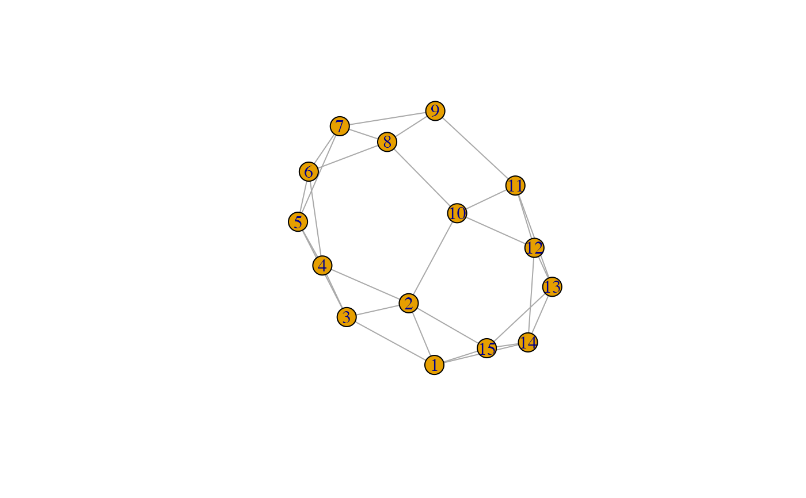

These functions allow measurement of various features of a diffusion process:
node_adoption_time(): Measures the number of time steps until
nodes adopt/become infected
node_thresholds(): Measures nodes' thresholds from the amount
of exposure they had when they became infected
node_infection_length(): Measures the average length nodes that become
infected remain infected in a compartmental model with recovery
node_exposure(): Measures how many exposures nodes have to
a given mark
node_adoption_time(.data)
node_thresholds(.data, normalized = TRUE, lag = 1)
node_recovery(.data)
node_exposure(.data, mark, time = 0)An object of a manynet-consistent class:
matrix (adjacency or incidence) from {base} R
edgelist, a data frame from {base} R or tibble from {tibble}
igraph, from the {igraph} package
network, from the {network} package
tbl_graph, from the {tidygraph} package
Logical scalar, whether the centrality scores are normalized. Different denominators are used depending on whether the object is one-mode or two-mode, the type of centrality, and other arguments.
The number of time steps back upon which the thresholds are inferred.
A valid 'node_mark' object or logical vector (TRUE/FALSE) of length equal to the number of nodes in the network.
A time point until which infections/adoptions should be
identified. By default time = 0.
node_adoption_time() measures the time units it took
until each node became infected.
Note that an adoption time of 0 indicates that this was a seed node.
node_thresholds() infers nodes' thresholds based on how much
exposure they had when they were infected.
This inference is of course imperfect,
especially where there is a sudden increase in exposure,
but it can be used heuristically.
In a threshold model,
nodes activate when \(\sum_{j:\text{active}} w_{ji} \geq \theta_i\),
where \(w\) is some (potentially weighted) matrix,
\(j\) are some already activated nodes,
and \(theta\) is some pre-defined threshold value.
Where a fractional threshold is used, the equation is
\(\frac{\sum_{j:\text{active}} w_{ji}}{\sum_{j} w_{ji}} \geq \theta_i\).
That is, \(theta\) is now a proportion,
and works regardless of whether \(w\) is weighted or not.
node_infection_length() measures the average length of time that nodes
that become infected remain infected in a compartmental model with recovery.
Infections that are not concluded by the end of the study period are
calculated as infinite.
node_exposure() calculates the number of infected/adopting nodes
to which each susceptible node is exposed.
It usually expects network data and
an index or mark (TRUE/FALSE) vector of those nodes which are currently infected,
but if a diff_model is supplied instead it will return
nodes exposure at \(t = 0\).
Other measures:
measure_attributes,
measure_central_between,
measure_central_close,
measure_central_degree,
measure_central_eigen,
measure_closure,
measure_cohesion,
measure_diffusion_infection,
measure_diffusion_net,
measure_features,
measure_heterogeneity,
measure_hierarchy,
measure_holes,
measure_periods,
measure_properties,
member_diffusion
Other diffusion:
make_play,
measure_diffusion_infection,
measure_diffusion_net,
member_diffusion
smeg <- generate_smallworld(15, 0.025)
smeg_diff <- play_diffusion(smeg, recovery = 0.2)
plot(smeg_diff)

# To measure when nodes adopted a diffusion/were infected
(times <- node_adoption_time(smeg_diff))
#> ▃▃▃▁
#> V1 V2 V3 V4 V5 V6 V7 V8 V9 V10 V11 V12 V13
#> 1 0 1 1 2 2 3 3 3 4 2 3 2 2
#> # ... with 2 more values from this nodeset unprinted. Use `print(..., n = Inf)` to print all values.
# To infer nodes' thresholds
node_thresholds(smeg_diff)
#> ▂▅▂▁▁
#> V1 V2 V3 V4 V5 V6 V7 V8 V9 V10 V11 V12 V13
#> 1 0 0.2 0.25 0.5 0.25 0.5 0.25 0.25 1 0.25 0.75 0.25 0.5
#> # ... with 2 more values from this nodeset unprinted. Use `print(..., n = Inf)` to print all values.
# To measure how long each node remains infected for
node_recovery(smeg_diff)
#> ▄▄▁▁▁
#> V1 V2 V3 V4 V5 V6 V7 V8 V9 V10 V11 V12 V13
#> 1 3 2 2 1 6 3 9 4 1 3 1 4 3
#> # ... with 2 more values from this nodeset unprinted. Use `print(..., n = Inf)` to print all values.
# To measure how much exposure nodes have to a given mark
node_exposure(smeg, mark = c(1,3))
#> ▆▃▁▁
#> V1 V2 V3 V4 V5 V6 V7 V8 V9 V10 V11 V12 V13
#> 1 0 2 0 1 1 0 0 0 0 0 0 0 0
#> # ... with 2 more values from this nodeset unprinted. Use `print(..., n = Inf)` to print all values.
node_exposure(smeg_diff)
#> ▆▁▁▁▃
#> V1 V2 V3 V4 V5 V6 V7 V8 V9 V10 V11 V12 V13
#> 1 0 1 1 0 0 0 0 0 0 0 0 0 0
#> # ... with 2 more values from this nodeset unprinted. Use `print(..., n = Inf)` to print all values.